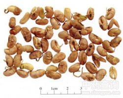

大豆黄卷

拼音
Dà Dòu Huánɡ Juǎn
别名
大豆卷
来源
豆科大豆属植物大豆Glycine max （L.） Merr.的种子发芽后晒干而得。
生境分布
无生境分布数据
药材特点
大豆 一年生直立草本，高60-180cm。茎粗壮，密生褐色长硬毛。叶柄长，密生黄色长硬毛；托叶小，披针形；三出复叶，顶生小叶菱状卵形，长7-13cm，宽3-6cm，先端渐尖，基部宽楔形或圆形，两面均有白色长柔毛，侧生小叶较小，斜卵形；叶轴及小叶柄密生黄色长硬毛。总状花序腋生；苞片及小苞片披针形，有毛；花萼钏状，萼齿5，披针形，下面1齿最长，均密被白色长柔毛；花冠小，白色或淡紫色，稍较萼长；旗瓣先端微凹，翼瓣具1耳，龙骨瓣镰形；雄蕊10，二体；子房线形，被毛。荚果带状长圆形，略弯，下垂，黄绿色，密生黄色长硬毛。种子2-5颗，黄绿色或黑色，卵形至近球形，长约1cm。花期6-7月，果期8-10月。
性状
干燥种子呈椭圆形，稍扁，长0.7～1.2厘米，直径5～7毫米，种皮黑褐色或紫褐色，有横向皱纹或纵裂，多数破裂，露出黄白色的子叶。子叶两片，肥厚；胚根细长，伸出于种皮之外，长5～10毫米，极弯，淡褐色，硬脆易断。气无，味淡，有油腻感。以粒大饱满、色黑褐、有皱纹及短芽者为佳。
性味
甘，平。
功能主治
清热，除湿，解表。用于暑湿发热，麻疹不透，胸闷不舒，骨节疼痛，水肿胀满。
用法用量
5钱～1两。
化学成分
含天门冬酰胺、胆碱、黄嘌呤(xanthine)及次黄嘌呤(hypoxanthine)，另含钙、钾、硅等。此外，含有丰富的蛋白质、脂肪、碳水化合物，以及甘氨酸、亮氨酸、异亮氨酸等。
药理作用
1：抑菌作用：对肺炎球菌、金黄色葡萄球菌等均有抑制作用
2：抗病毒作用：用于病毒性感冒、流感
摘录
《全国中草药汇编》